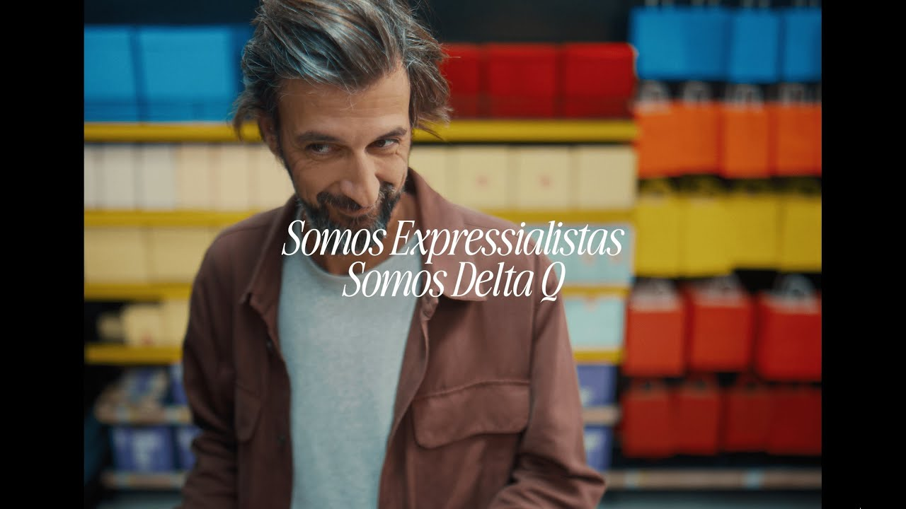
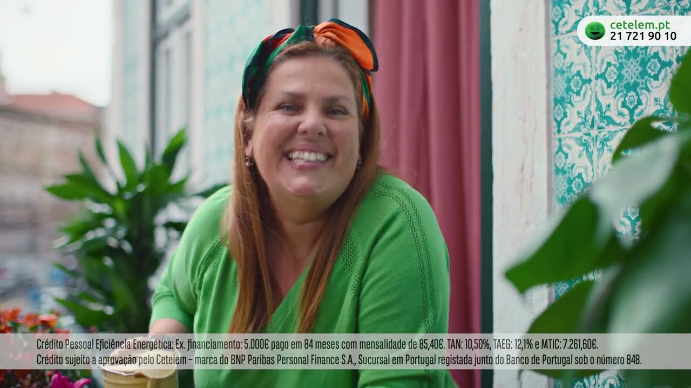

Commercial · Interiors
Richly dressed domestic worlds
Layered practical lighting, tactile surfaces, and human-scale storytelling.
Lisbon-based · film, commercials, branded worlds
Marta do Vale creates visual environments for films and commercials with a sharp eye for tone, texture, and story. From intimate interiors to high-concept set pieces, every frame is built to hold attention.

“Sets should do more than look beautiful. They should make the story feel inevitable.”
Selected work
A mix of cinematic interiors, graphic commercial worlds, food styling, location-driven frames, and period atmosphere.
Commercial · Interiors
Layered practical lighting, tactile surfaces, and human-scale storytelling.
Commercial · Stylised

Interiors

Cinema

Commercial

Commercial

Interiors

Commercial

Commercial

Food & Product

Cinema

Commercial
Approach
Every prop, texture, and line in the set is there to support the emotional logic of the scene.
Strong visual systems, controlled palettes, and camera-aware set dressing for fast-moving productions.
Built through years of leading art department teams with care, clarity, and obsessive attention to detail.
Memorable spaces aren’t cluttered. They’re intentional, layered, and unmistakably alive.
About Marta
Marta do Vale is an art director born and raised in Lisbon. Her passion for the arts began at António Arroio School of Arts, followed by a Bachelor’s in Scenography from the Faculty of Architecture and a Master’s in Scene Design from the Theatre and Film School in Lisbon.
Since 2011, she has worked within cinema’s art departments, building a deep understanding of how visual environments shape story. In 2016, she expanded into advertising, bringing the same cinematic discipline to commercial productions.
The result is work that blends design, emotion, and production craft — creating worlds that feel complete on camera.
Contact
Available for film, commercial, and creative production collaborations.